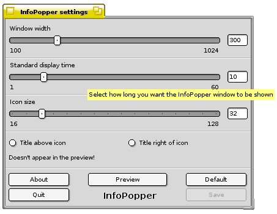
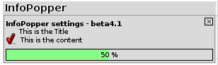
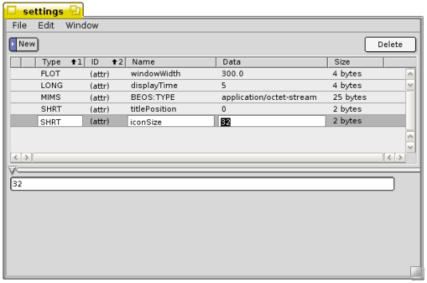

InfoPopper
Configuring InfoPopper
InfoPopper Settings makes use of the local kit in ZETA, and therefor
comes fully localized.
It has been translated in to the following languages:
deDE
itIT
jaJP
nlBE
nlNL
noNO
ptPT
Please take part in the localization, and translate in to your language.
The German developer Jörn Weigend from Team-Maui has
developed a graphical frontend to the InfoPopper settings. The
InfoPopper is mainly updated with three slidebars. It has been translated in to the following languages:
Please take part in the localization, and translate in to your language.
The maximum window width is automatically set to the same as your horizontal screen resolution. In the screenshot below it is set to 1024, which is equals the XGA resolution. The limitation is only done in this graphical frontend, so that you never define the InfoPopper to cover the Deskbar. By default the window width is set to 300 pixels.
The second slider is for setting the Standard display time, which can be overwritten by the applications with InfoPopper support. By default it is set to 10 seconds, but SoundPlay for instance has the option displaying it as long as music is played.
The third and last slider is a must. By default it is set to as low as 16x16 pixels. That's not much for icons, and even worse for album covers and pictures of your buddies using AIM for chatting!
For all three sliders there has been implemented labels describing what you are about to change.
Instead of using the sliders you can simply just type in the wanted size in the fields right to the sliders.

For each change you do with the sliders you can see the changes by pressing the button. A preview InfoPopper will then appear, showing the set sizes. InfoPopper Settings also let you set if you want to have the title above the icon or to the right of the icon. This change can only be seen in the Preview window when the icon size is set to 40 or higher.

The developer of this graphical frontend and JABA just loves easter eggs, so just you look for them!
InfoPopper's configuration file can be found at /boot/home/config/settings/BeClan/infopopper/, and can also be edited with QuickRes:

From within QuickRes you can easily change the size of the InfoPopper window, the display time, the title position and at last the icon size. By default the display time is set to 5 seconds and the icon size to 16.